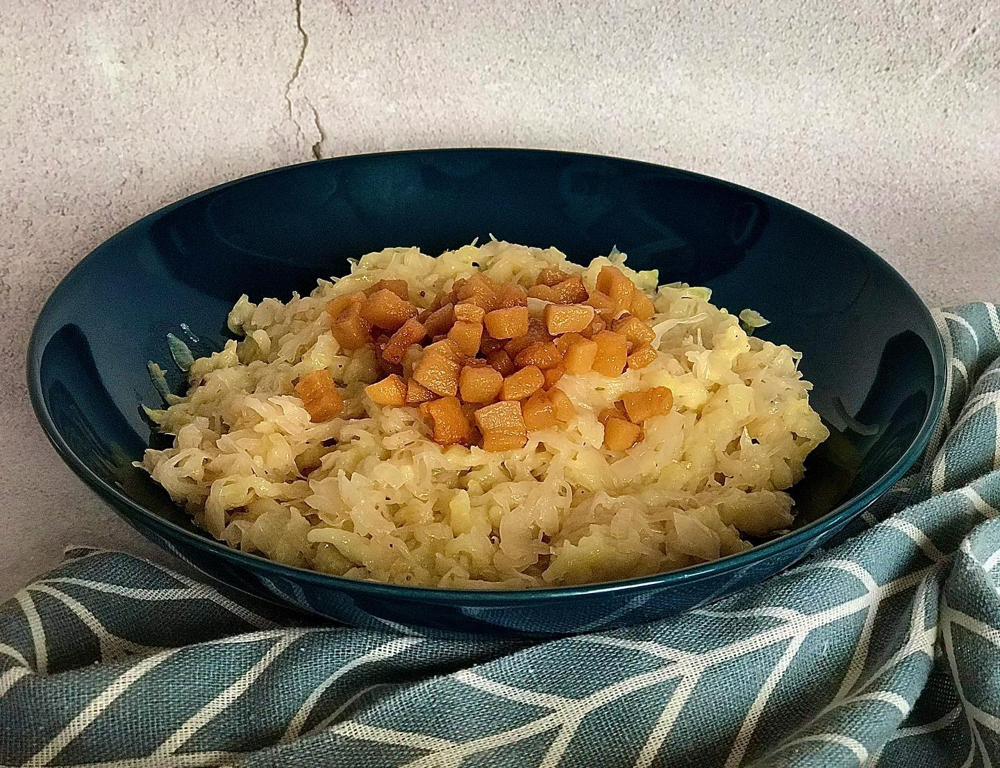

Halušky s kyslou kapustou podľa @cili_papricka_v_kuchyni — Normy Jedál
Dnešok sa nesie v znamení halušiek. Ja som si pochutnala na vynikajúcich strapačkách s kyslou kapustou a slaninkou. Už dávno sme ich nemali. A veru, dnes sa vydarili priam dokonalo, ako v dobrej kolibke🥓🇸🇰 #strapacky #strapackyskysloukapustou #strapackyskapustou #haluskyskapustou #haluskyskysloukapustou #slaninka #dnesjem #dnesnyobed #kyslakapusta